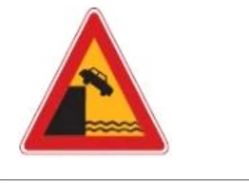

884. Замын хөдөлгөөний тухай хуульд зааснаар дараах аюулгүй байдлын тэмдгийн талаарх зөв тайлбар аль вэ?

- ①Замын нэг тал нь хавцал зэрэг унах аюултай бүс болохыг мэдээлэх нэмэлт тэмдэг
- ②Замын нэг тал нь голын эрэг зэрэг унах аюултай бүс болохыг мэдээлэх хориглох тэмдэг
- ③Замын нэг тал нь хавцал зэрэг унах аюултай бүс болохыг мэдээлэх анхааруулах тэмдэг
- ④Замын нэг тал нь голын эрэг зэрэг унах аюултай бүс болохыг мэдээлэх заах тэмдэг
Хариулт харах
Зөв хариулт
③ Замын нэг тал нь хавцал зэрэг унах аюултай бүс болохыг мэдээлэх анхааруулах тэмдэг
Үндэслэл
Замын хөдөлгөөний тухай хуулийн дагаж мөрдөх журмын 6-р хавсралт Голын дагуух замын тэмдэг (Анхааруулах тэмдэг No127) Энэ нь замын хажуу тал бүхэлдээ голын эрэг, далайн эрэг, хөндий зэрэг унах эрсдэлтэй бүс болохыг харуулж байна.
Үндэслэлийн текст нь машин орчуулга.